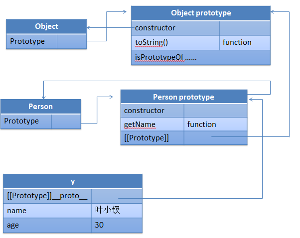
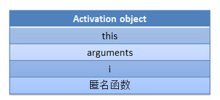

前言
中午时候我去药店称了下体重，好家伙！我减肥成功了，足足比上个月瘦了10斤！于是想减肥就去郑州吧。。。
然后回来迷迷糊糊睡了一会，居然想起了周三的面试，有点小遗憾有点小触动。
这次回成都后，还没有正式找工作，我也在审视自己，想起了上次二面时候面试官问的一个问题：
你有神马值得自豪的事情吗？你有什么能证明自己性格特点的事情吗？
这个其实想让我自我吹嘘一番嘛，但是我出来工作后是有几件出彩的事情，但是感觉在他面前就说不来也不算事了，于是弱弱的说了一下自己坚持写了3个月的博客了。
但是在他看来，3个月似乎不算事。。。其实想一想3个月确实不算什么，转瞬即逝。我还有很多不懂的东西，各个方面。
所以下周我还是应该找一个工作安定下来，认认真真做一两个产品，然后坚持把今年的博客写完先！希望下次被人问到这个问题时候我可以自豪的说，我每天都坚持学习了2,3个小时，并且分享出来了博客，并且以此为乐。
PS：其实我在睡觉时候，主要想到的是，怎么我的机票还没给我报销。。。账上没钱啊。。。:)
好了，废话结束，进入我们下午的学习吧，我们这次又来看看我们的prototype吧，面向对象我又来了，因为这个东西前面我们就写过代码，这里直接上重点。
原型链
我们创建的每一个函数都包含一个prototype（原型）属性。
他是一个指针，指向一个对象，这个对象是包含可以由特定类型的所有实例共享的属性和方法。
通俗点：prototype就是一模板，新创建的模板就是对他的一个拷贝
每个prototype对象又会包含一个constructor属性，该属性意义不大，而且经常被覆盖，但是他是指向构造函数的，我们在类型判断的地方也许用得到。
创建新实例后，实例内部包含一个[[Prototype]]的内部属性（指针，__proto__），指向构造函数的prototype，这个关系是你搞不掉的，我们这里有几个方法需要各位记住：
我们通过isPrototypeOf来确定某个对象是不是我的原型
hasOwnPrototype 可以检测一个属性是存在实例中还是原型中
意思是该属性不能是原型属性才返回true
说了这么多，我们来上个图吧：
1 var Person = function (name, age) { 2 this.name = name; 3 this.age = age; 4 }; 5 Person.prototype.getName = function () { 6 return this.name; 7 }; 8 var y = new Person('叶小钗', 30);

我们一般是这样干的，但是name与age在外边是可以访问的哟。
1 var s1 = Person.prototype.isPrototypeOf(y); //true; 2 var s2 = y.hasOwnProperty('name'); //true 3 var s3 = y.hasOwnProperty('id'); //false 4 var s4 = y.hasOwnProperty('getName');//false
继承时原型链的关系
我们这里直接上图了，因为我们的Person函数继承自Object构造函数，说白了就是Person的prototype是object构造函数的一个实例：

由于之前写过类似的文章，这里就不多说了。
做两道题吧
第一题
1 var proto = { a: 1 }; 2 function cls() { }; 3 var obj1 = new cls(); 4 cls.prototype = proto; 5 //obj1.a现在是什么？
这里cls是作为构造函数使用的，obj1实例化后其内部属性[[Prototype]]指向cls的原型对象（这里相当于一个复制），后面改变了构造函数的原型指向
这道题其实在勾引我们，我们很有可能就会回答说1，其实答案是undefined。因为构造函数cls创建后，其原型对象已经形成，最后只是切断了cls和其原型的联系，
obj1的__proto__([[Prototype]])依旧指向原来的那个原型，而不是proto。
第二题
1 function cls() { }; 2 var obj1 = new cls(); 3 cls.prototype.a = 1; 4 //obj1.a现在是什么？ 5 alert(obj1.a);
这道题与上题有所不同，虽然事后更改了原型，但是都是更改的堆上的同一对象，所以答案是1
第三题
我找到了一个闭包的题目，顺便拿出来吧
1 function build() { 2 var i; 3 return function () { alert(i++); } 4 } 5 var f1 = build(); 6 var f2 = build(); 7 var s1 = f1 == f2; 8 var s = ''; 9 //请说明：f1和f2是否是同一函数，分别调用f1() f2()会产生什么效果。
这道题有点意思哦，为了让其运行正常，我们给i一个1吧。
若是这里将函数返回值去掉的话，f1与f2就是一样的了，但是由于里面产生了闭包，所以f1与f2各自维护着自己的环境与闭包。
我们来理一理这道题：
5行执行时候会创建一个执行环境，以及相关作用域链，然后初始化arguments以及this，最后与i、以及匿名函数一起初始化形成了活动对象（有问题请提出）

5行结束后，执行环境以及作用域链被回收，但是活动对象被留了下来。
在第六行f2初始化时，又重新执行了一次这个过程。
所以其最后调用时候所使用的活动对象不一致，所以两个函数不是一个函数啦。
错误：我刚刚吃饭时候想了下，这里的活动对象应该不包括this
PS：我暂时找不到好的题目了，若您有好的题目，请留下
结语
今天做了一次回顾，下面点再学习其它知识吧，现在先去吃个饭吧。